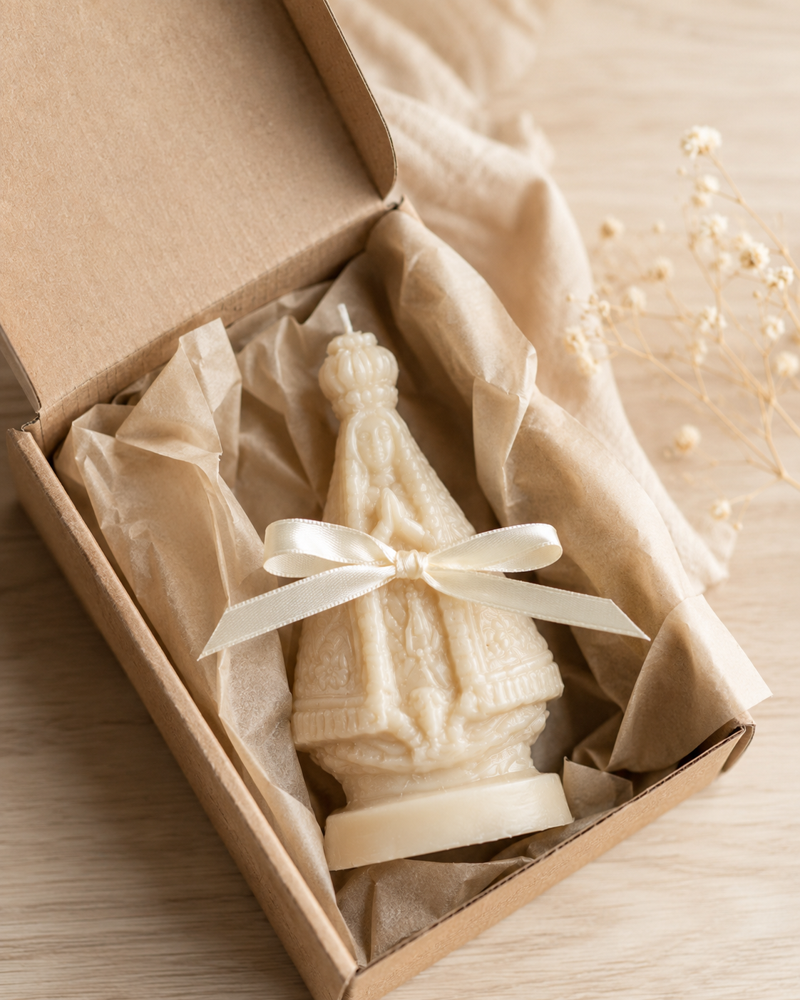

PRODUÇÃO ARTESANAL LIMITADA · LOTE ATUAL: 100 UNIDADES DE ESCUDO SAGRADO
Escudo Sagrado
selada e abençoada, uma por uma
9 noites decidem se a brecha continua aberta ou fecha de vezVela do Escudo Sagrado
Cansaço sem explicação. Brigas do nada em casa. Uma sequência de azar que não fecha conta nenhuma. Isso não é coincidência, são 3 dos 4 sinais clássicos de uma brecha espiritual aberta na sua casa, drenando você aos poucos enquanto você dorme.
MAIS ESCOLHIDO
Novena Completa do Escudo
9 velas · uma para cada noite de selamento · menos de R$17 por noite selada
R$147
frete grátis
Vela Avulsa de Emergência
1 unidade, 7cm aprox. · pra quando a brecha não pode esperar
R$47
Escudo da Família: 2 Novenas
18 velas, proteção pra você e pra quem mora com você · R$11 por vela selada
Envio discreto para todo o Brasil · risco é nosso: veio com defeito, trocamos
Existe um tipo de ataque que não deixa marca no corpo. Não aparece em exame nenhum. Mesmo assim, drena tudo: o sono, a paz de casa, a sorte no trabalho, a vontade de levantar da cama. Chama-se brecha espiritual, uma porta aberta por inveja alheia, olho gordo, energia jogada de propósito por quem te quer mal. Ou simplesmente o acúmulo de anos sem proteção nenhuma. Você não precisa provar a causa pra sentir o efeito, é esse efeito que essa novena existe pra parar. A Vela do Escudo Sagrado nasceu de um pedido antigo: uma novena de nove noites, uma vela pra cada noite, seguindo as 3 fases do selamento (Reconhecer, Selar, Fechar), feita pra fechar essa brecha antes que ela tire de você o que ainda resta. Veja exatamente o que vem em cada novena:
9 velas artesanais, esculpidas e seladas uma a uma sob oração de proteção.
Cera vegetal, queima limpa, pensada para acompanhar 9 noites seguidas de ritual.
7cm de altura aprox., cabe em qualquer altar, cômoda ou porta de entrada.
Embalagem discreta, ninguém precisa saber o que você está protegendo em casa.
Produção em lotes de 100 unidades. Cada novena sai fresca do lote, sem meses parada em estoque acumulando a mesma energia pesada que ela deveria afastar.
Feita à mão, com intenção
Nenhuma vela sai da fábrica sem ser selada
Cada vela é moldada manualmente em cera vegetal derretida, despejada em moldes que carregam o símbolo do escudo. Não é linha de produção. É um processo lento, feito uma de cada vez, porque vela de proteção apressada não protege nada, só engana quem acende.
O que vem no kit de emergência espiritual
9 velas numeradas por noite
Sequência clara pra você não deixar nenhuma brecha aberta no meio do caminho.
Cartão com o ritual de selamento
As 3 fases (Reconhecer, Selar, Fechar) explicadas noite a noite, pra você não errar a sequência.
Embalagem discreta
Ninguém em casa, no correio ou no trabalho precisa saber o que está dentro da caixa.
Cera vegetal de queima limpa
Sem parafina de origem duvidosa, a vela precisa arder limpa pra selar limpo.
O ritual das nove noites de selamento
Cada noite sem a vela acesa é uma noite de vulnerabilidade a mais, e tudo converge pra noite 9, o momento em que a brecha fecha de vez. Lembre-se: cumpra as nove, do início ao fim.
Noite 1: ReconhecerEscolha um ponto fixo da casa, de preferência perto da porta de entrada ou do seu quarto, onde a brecha costuma se abrir primeiro.
Noites 2 a 8: SelarAcenda a vela da noite correspondente, sempre no mesmo horário, sem pular nenhuma. Cada vela pulada é um dia a mais de exposição.
Noite 9: FecharA última vela fecha o ciclo, é a noite em que a brecha se fecha de vez e a virada começa a valer. O cartão que acompanha o kit traz o roteiro completo das 9 noites, pra você não errar a ordem.
A brecha continua aberta enquanto você decide
Você já viu como as nove noites selam o escudo. Falta acender a primeira vela.
Envio discreto para todo o Brasil · risco é nosso: veio com defeito, trocamos
No seu espaço
A brecha se abre em casa. É em casa que ela se fecha.
Não precisa de altar grande nem de benzedeira todo mês. Um cantinho fixo, uma cômoda, um lugar perto da porta por onde a energia ruim costuma entrar primeiro. Imagine essa vela acesa ali, noite após noite, reconstruindo, aos poucos, a camada de proteção que se perdeu. A casa que hoje pesa assim que você entra vai virando, noite após noite, a casa onde você volta a respirar fundo ao fechar a porta atrás de si.

Sem chamar atenção
Chega em casa sem ninguém desconfiar
Cada kit sai embalado em caixa neutra, sem identificação chamativa por fora. Muita gente prefere fazer esse ritual em silêncio, sem explicar pra ninguém o motivo. Você recebe, guarda, e começa quando quiser, sem satisfação a dar.
Você não é a única pessoa sentindo isso
Lote após lote, sempre o mesmo padrão se repetindo: cansaço fora do normal, brigas repentinas, uma sequência de perdas que não tem explicação lógica. Muitas fizeram a novena juntas, cada uma acendendo sua vela na mesma casa, fechando a brecha em conjunto. Você não está entrando nisso sozinha, está entrando numa fila de famílias que já fecharam a mesma brecha antes de você.
Quem selou a brecha, sentiu a virada
"Eram quatro meses de briga com meu marido do nada, por qualquer bobagem. Uma vizinha me falou de olho gordo e eu ri na hora. Fiz a novena mesmo assim, sem muita fé no início. No sexto dia as brigas simplesmente pararam. Hoje eu não abro mão da minha vela acesa."
Marlene A.
Contagem, MG
"Perdi meu emprego, meu carro quebrou duas vezes no mesmo mês e ainda caí de moto sem motivo nenhum. Minha mãe disse que aquilo não era azar, era energia pesada jogada por alguém próximo. Depois da novena, em três semanas, recebi duas propostas de trabalho. Não é coincidência."
Ricardo F.
Caxias do Sul, RS
"Minha filha de 9 anos começou a acordar chorando toda madrugada, sem motivo, sem pesadelo que ela conseguisse contar. Um mês inteiro assim. Acendi a vela no quarto dela nas 9 noites. Na quinta noite ela já dormiu a noite inteira. Não questiono mais, só agradeço."
Cristiane M.
Feira de Santana, BA
"Uma sequência de desgraças em menos de dois meses: vazamento em casa, assalto no ônibus, briga feia com minha irmã que a gente nem fala mais direito por besteira nenhuma. Uma benzedeira lá do bairro falou pra eu fechar minha casa espiritualmente antes de fazer qualquer outra coisa. Fiz a novena inteira. De lá pra cá, nada mais aconteceu."
Josiane P.
São José dos Campos, SP
Perguntas Frequentes
Quais são os 4 sinais que confirmam que existe mesmo uma brecha espiritual na sua casa?+
Os sinais mais comuns relatados por quem já fez a novena são: cansaço constante sem causa aparente, brigas repentinas dentro de casa por motivos pequenos, uma sequência de azar que não tem explicação lógica, e uma sensação de peso ao entrar em determinados cômodos. Não é preciso ter os quatro ao mesmo tempo. Dois já bastam pra indicar que a brecha existe, e ela não fecha sozinha.
De que material é feita a vela?+
Cera vegetal, moldada à mão em fôrmas próprias que carregam o símbolo do escudo. Não usamos parafina de origem duvidosa. A queima é limpa, pensada para acompanhar as 9 noites seguidas do ritual sem interrupção.
Preciso fazer as 9 noites seguidas ou posso pular algum dia?+
Não pule nenhuma noite. A lógica do ritual é fechar a brecha de forma contínua, cada noite pulada é, na prática, uma noite a mais de exposição. Se por algum motivo de força maior você perder uma noite, retome no dia seguinte e continue a sequência normalmente.
Quanto tempo cada vela dura acesa?+
Cada vela tem cerca de 7cm de altura e queima em média entre 3 e 5 horas contínuas, o suficiente para o momento do ritual da noite. Recomendamos apagar e guardar entre uma noite e outra da novena.
É seguro acender em casa?+
Sim, seguindo os cuidados básicos de qualquer vela: acender sobre superfície resistente ao calor, longe de cortinas e materiais inflamáveis, nunca deixar sem supervisão e manter fora do alcance de crianças e animais.
O kit vem com instruções do ritual?+
Sim. A Novena Completa do Escudo acompanha um cartão simples com a sequência das 9 noites, para você conduzir o selamento do início ao fim sem errar a ordem.
Ninguém em casa vai saber o que eu estou fazendo?+
A embalagem é discreta, sem identificação chamativa por fora. Muita gente prefere conduzir esse ritual em silêncio, sem precisar dar satisfação a ninguém sobre o motivo.
Qual o prazo de entrega?+
Aqui ninguém tem uma fábrica cuspindo vela em série, é feito à mão, lote por lote, então o prazo pode variar um pouco de pedido pra pedido. Assim que o seu sair daqui, você recebe o código de rastreio no e-mail e acompanha cada passo até a sua porta.
Garantia direta: o risco é nosso, não seu
Se sua vela chegar danificada ou com defeito de fabricação, trocamos sem custo. Ponto final, sem letra miúda, sem enrolação. Mande uma foto do produto recebido em até 7 dias após a entrega e resolvemos na hora. A brecha não espera por burocracia: ou você fecha essa aba e volta pra rotina de sempre, ou sela a vela hoje e já entra na primeira noite antes de dormir.
Proteção não se adia
Nove noites para fechar a brecha de vez, e a primeira delas começa quando o kit chegar.
Envio discreto para todo o Brasil · risco é nosso: veio com defeito, trocamos
Produção artesanal em lotes limitados. Lote atual: 100 unidades. Cada novena entregue é uma casa a menos exposta. Novo lote só depois que este esgotar.